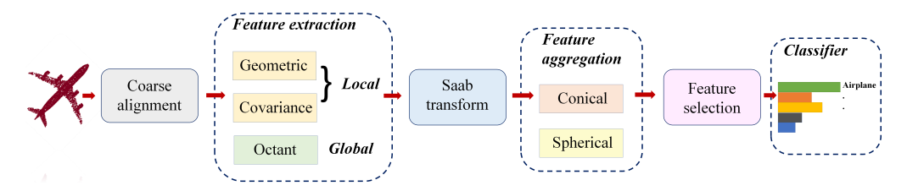

Abstract
This project focuses on classifying 3D point clouds that are arbitrarily rotated. The approach is based on the methods described in this paper. The model is designed to handle rotations and classify the point clouds accurately.
Dataset
We evaluate the proposed S3I-PointHop method for the point cloud classification task on the ModelNet40 dataset, which consists of 40 object classes. Objects in ModelNet40 are pre-aligned. We rotate them in the train and test sets in our experiments. The rotation angles are uniformly sampled in [0, 2π]
Architecture

S3I-PointHop introduces a lightweight, mathematically transparent framework for 3D point cloud classification with SO(3) rotational invariance. It replaces pose-sensitive modules with invariant representations, leveraging principal components and rotation-invariant features. The architecture employs only a single-hop approach, combining geometric, covariance, and octant-based local features into a compact 68-dimensional feature vector. These features are aggregated using novel conical and spherical spatial pooling techniques, followed by discriminant feature selection via DFT and a linear classifier for final predictions.
Novel Aggregation Technique (Cones, Inverted Cones, Spheres)
The aggregation process defines ten spatial regions: one global, three symmetric cones, and six inverted cones. Each region pools features from subsets of points, using max, mean, variance, and norm-based methods. Symmetric cones capture the geometric symmetry of objects, while inverted cones emphasize asymmetrical details by repositioning the cone vertex and inverting its direction. This technique mimics a pinhole camera’s perspective, examining the object from various sides and directions with bounded viewing angles (θ1 and θ2). By combining these localized views, the aggregation method captures fine-grained spatial relationships, enriching the feature representation and improving classification performance.
Results
The method achieves state-of-the-art accuracy of 83.1% on the ModelNet40 dataset under arbitrary SO(3) rotations, outperforming existing approaches, including PointNet, DGCNN, and PointHop variants. S3I-PointHop’s compact 900 KB model size and single-hop design make it both computationally efficient and highly accurate for real-world applications involving unaligned 3D point clouds.
Project information
- Language: Python
- IDE: VSCode
- Architecture: Custom 3D Point Cloud Classifier
- Project URL: 3D Point Cloud Classification